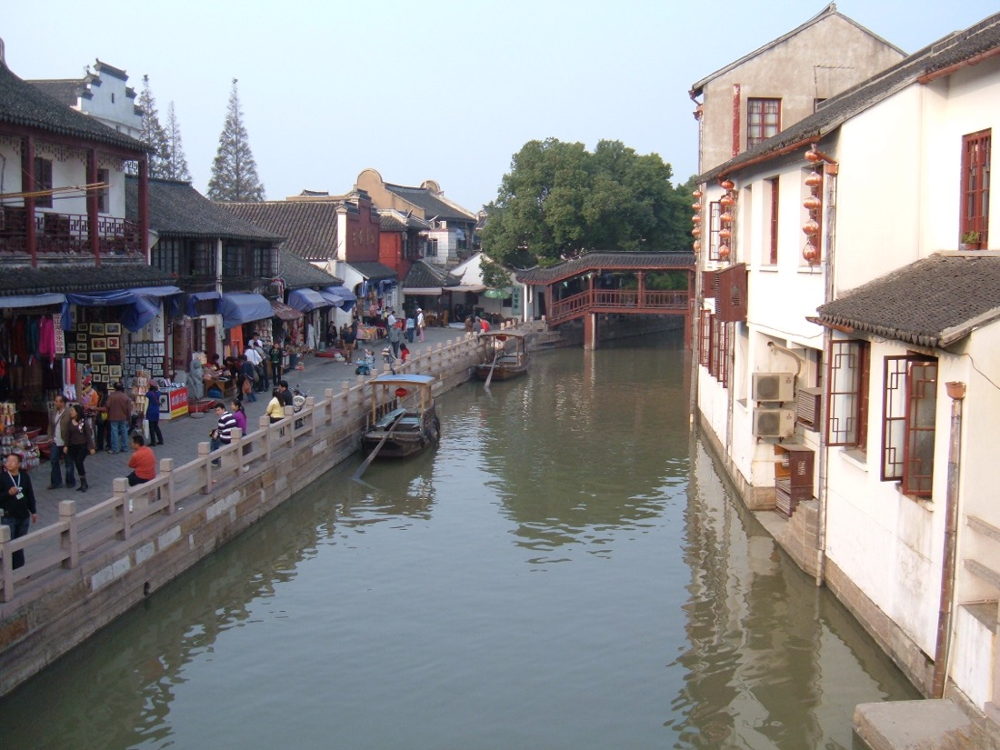

Шанхай.
Искусство
впечатлять.
Авторские экскурсии и путешествия,
в которых всё начинается с вас.
Личное сопровождение.Откройте город с нами ↓
Большой город.
Только ваша история.
Увидеть знаковые места. Свернуть на тихую улицу. Задержаться за ужином с видом на огни. Мы собираем Шанхай вокруг ваших интересов — без спешки и чужого расписания.
Город, который
раскрывается вам.
От первого знакомства
до любимых мест, о которых знают свои.
Знакомство с направлениями. Подробные программы и стоимость — по запросу.
Ваше время —
самая большая
ценность.
От встречи в аэропорту до поездки за город. Обсудим маршрут, время и подходящий формат автомобиля заранее.
Заказать трансфер ↗
ЧЖУЦЗЯЦЗЯО / 朱家角За каждым маршрутом —
личное отношение.
Меня зовут Katrin. Я помогаю знакомиться с Шанхаем так, чтобы за красивыми видами вы почувствовали настоящий город.
Для кого-то это первая прогулка по набережной. Для другого — архитектура старых кварталов, местная кухня или день вдали от мегаполиса. Начнём с того, что интересно именно вам.
Познакомиться с Katrin ↗Не только маршруты.
Вкус к путешествиям.
Ужин с видом, вечерний выход или шопинг.
Расскажите о ваших планах — обсудим детали.
До встречи
в Шанхае.
Расскажите о датах, интересах и пожеланиях.
Вместе найдём ваш формат путешествия.